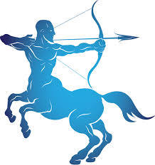

Hello, it's me I was wondering if after all these years you'd like to meet To go over everything They say that time's supposed to heal ya But I ain't done much healing Hello, can you hear me? I'm in California dreaming about who we used to be When we were younger and free I've forgotten how it felt before the world fell at our feet There's such a difference between us And a million miles Hello from the other side I must have called a thousand times To tell you I'm sorry for everything that I've done But when I call you never seem to be home Hello from the outside At least I can say that I've tried To tell you I'm sorry for breaking your heart
